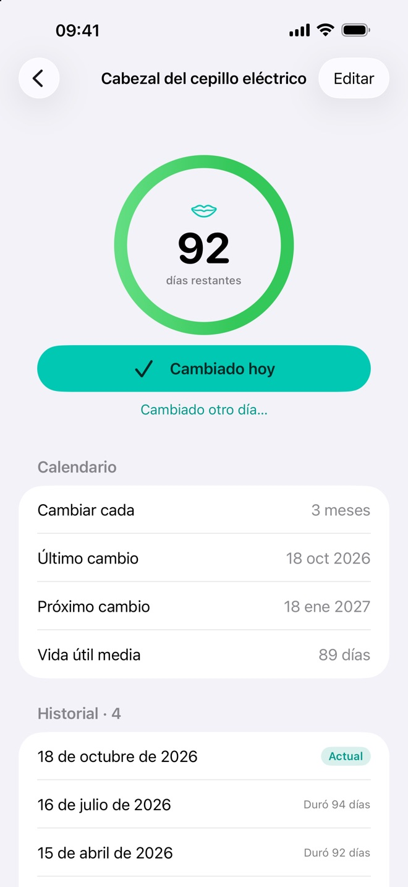
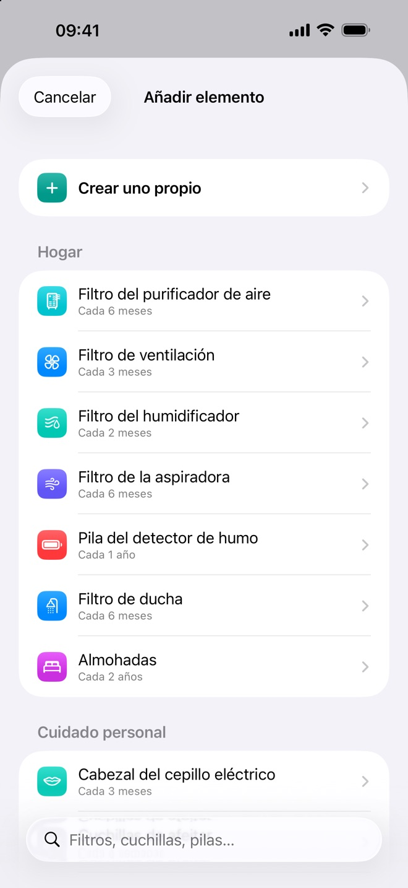
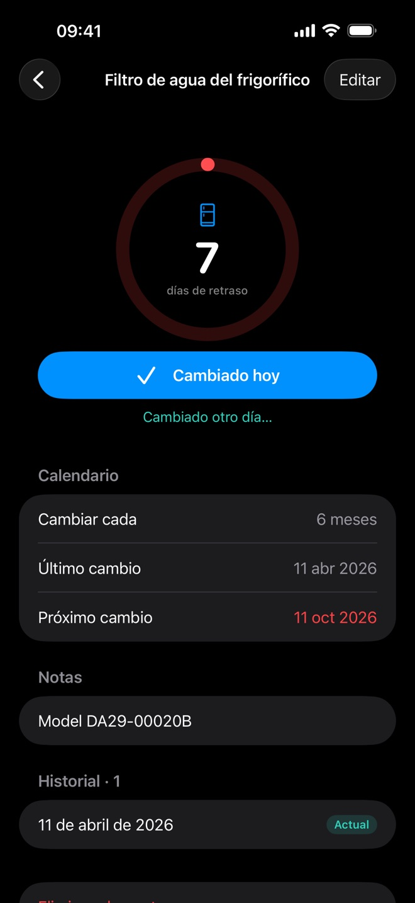
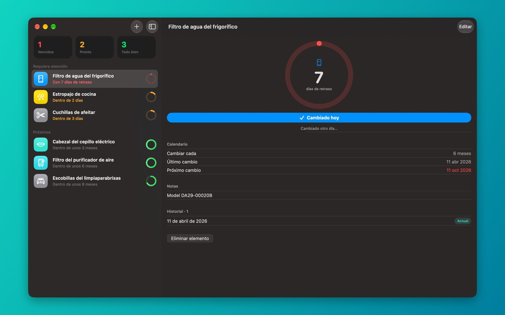
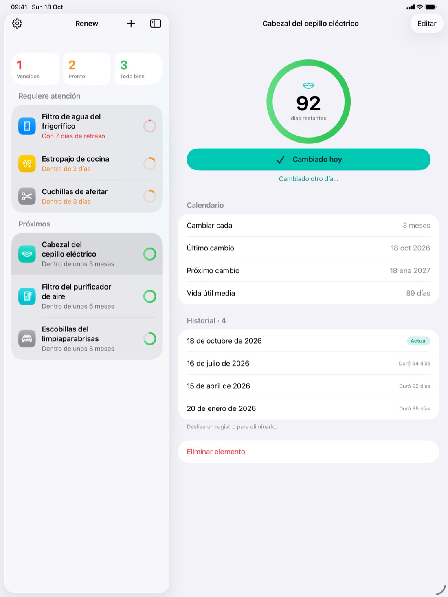
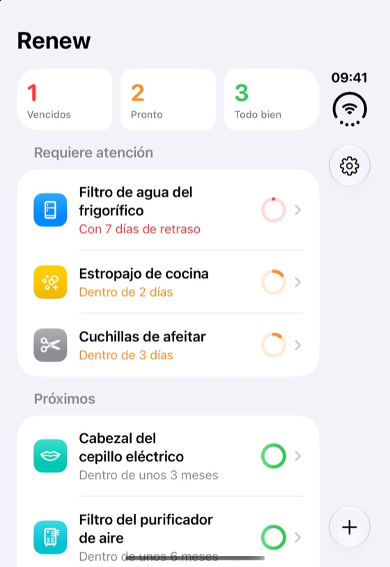
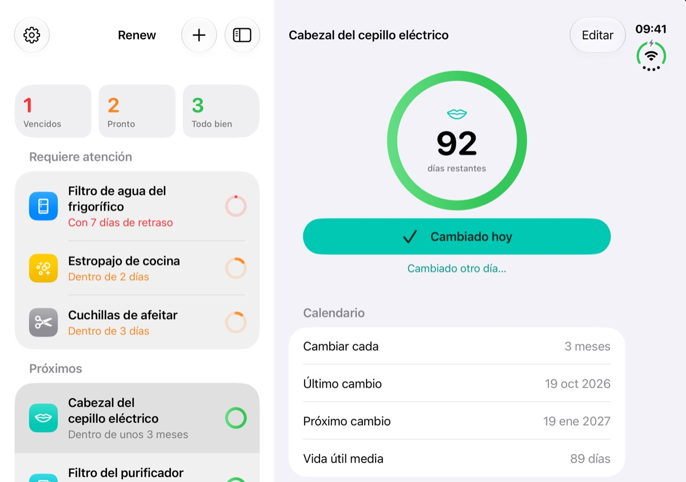

Regístralo con un toque
Toca o desliza para marcar algo como cambiado hoy, o elige otra fecha. La cuenta atrás empieza desde el día en que lo cambiaste de verdad.
Para iPhone, iPad y Mac
Renew te avisa cuando toca cambiar lo que se desgasta, como filtros de agua, cabezales del cepillo de dientes y cuchillas de afeitar, y guarda el historial de cada cambio.
Elige entre 25 elementos predefinidos con intervalos de cambio habituales o crea los tuyos.
Te llega una notificación el día que toca, a la hora que elijas.
Márcalo como cambiado y la cuenta atrás empieza de nuevo desde ese día.
Todo lo que necesitas para controlar filtros, cabezales y cuchillas, y nada que sobre.
Toca o desliza para marcar algo como cambiado hoy, o elige otra fecha. La cuenta atrás empieza desde el día en que lo cambiaste de verdad.
Elige la hora del aviso, marca el cambio o pospón el recordatorio desde la propia notificación, y elige qué dispositivos te avisan.
Un anillo en cada elemento muestra la vida útil restante. Los vencidos y los que tocan pronto aparecen arriba.
Consulta cada cambio anterior, cuánto duró y la vida útil media.
Tus elementos se mantienen sincronizados con tu cuenta privada de iCloud. ¿Prefieres tenerlo todo en un solo dispositivo? Desactiva la sincronización.
Sin cuenta, sin anuncios, sin rastreo. Tus datos se quedan en tus dispositivos y en tu propio iCloud.



Cómprala una vez y usa Renew en tu iPhone, iPad y Mac. Una app nativa en cada uno, sincronizada con iCloud.


Novedad
Plegado, Renew muestra tu lista en la pantalla exterior. Al desplegarlo, el elemento más urgente se abre justo al lado de la lista. Vuelve a plegarlo y regresas a tu lista.


| iPhone | iOS 18 o posterior |
|---|---|
| iPad | iPadOS 18 o posterior |
| Mac | macOS 15 Sequoia o posterior Chip de Apple e Intel |
| iPhone Duo | Pantallas exterior e interior |
| Precio | Compra única. Sin suscripción ni compras dentro de la app. |
|---|---|
| Sincronización | Opcional. Necesita la misma cuenta de Apple con sesión iniciada en iCloud en cada dispositivo. |
| Cuenta | No hace falta. Funciona sin conexión. |
| Accesibilidad | VoiceOver, tipo de letra dinámico, modo oscuro |
Renew no tiene servidores, ni analíticas, ni anuncios. Nada de lo que registras llega nunca al desarrollador. Leer la política de privacidad
Lee las preguntas frecuentes (en inglés) o abre una incidencia para informar de un error o proponer una función.